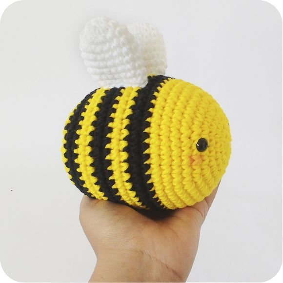
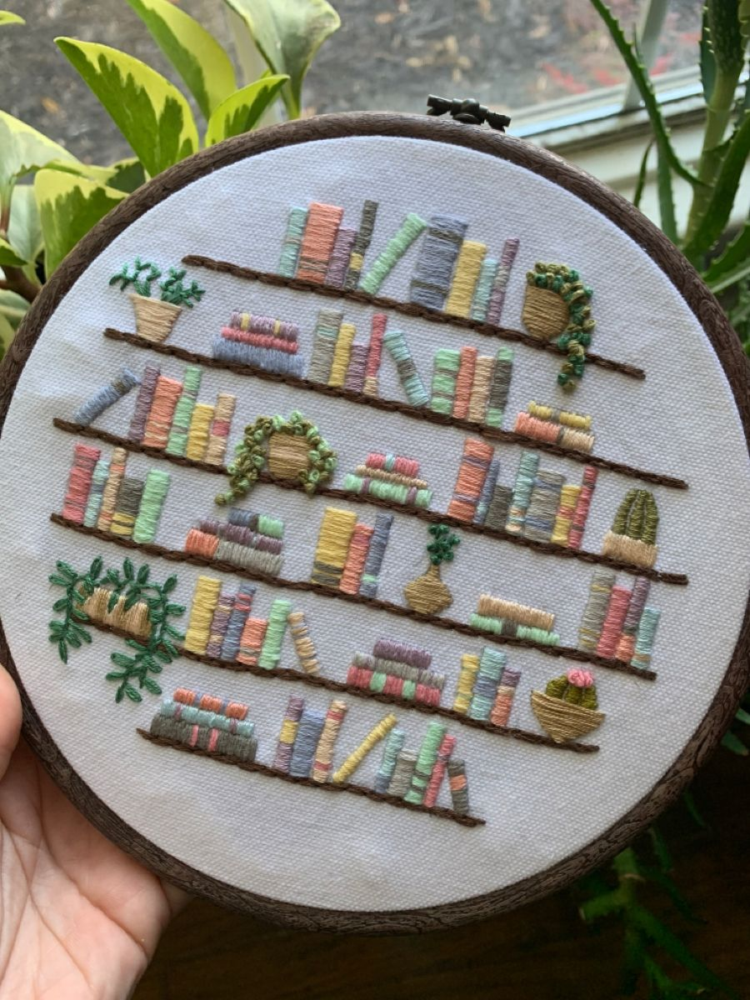

Venha fazer parte do Moiras!
Cada peça tem uma história. Compartilhe a sua.
Valorize o trabalho manual e conecte-se com quem ama artesanato.
Explore o mundo do artesanato
Encontre trabalhos feitos com carinho.
Amigurumi
Bordado
Costura
Trabalhos que contam histórias
Conheça criações feitas com carinho por nossos artistas.
Flores de crochê
Pequenos detalhes feitos à mão para deixar o dia mais bonito.
Por Lari
Meu primeiro amigurumi
Um bichinho feito ponto por ponto, com muito carinho.
Por Maria Criativa
Bordado floral com livros
Linhas, cores e criatividade transformadas em arte.
Por Clara Faz à MãoConheça nossos artistas
Cada artista tem uma história e um talento especial. Na MOIRAS, valorizamos quem transforma criatividade em arte feita à mão.
Sobre a MOIRAS
A MOIRAS é um espaço para compartilhar trabalhos artesanais, conhecer artistas e valorizar a beleza das criações feitas à mão.
Nosso objetivo é conectar pessoas apaixonadas por artesanato e criatividade.